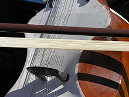
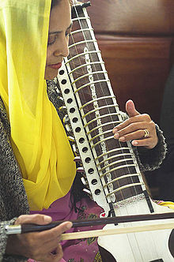

The esraj (Bengali: also called the Dilruba) is a string instrument found in
two forms throughout the north, central, and east regions of the Indian
subcontinent. It is a young instrument by Indian terms, being only about 300
years old.
The dilruba is found in the north, where it is used in religious
music and light classical songs in the urban areas. Its name is translated as
"robber of the heart." The esraj is found in the east and central areas,
particularly Bengal (Indian states of West Bengal and Tripura; and Bangladesh)
and it is used in a somewhat wider variety of musical styles than is the
dilruba.
The Dilruba originates from the Taus and is the work of the 10th Sikh Guru,
Guru Gobind Singh,whilst that of the Taus was the work of Guru Hargobind (the
sixth guru of the Sikhs).
The Dilruba was then produced to replace the
previously heavy instrument (the Taus). This attempt was intended to 'scale
down' the Taus into what is now known to be the Dilruba. This made it more
convenient for the Sikh army to carry the instrument on horseback

The structure of both instruments is very similar, each having a medium sized
sitar-like neck with 20 heavy metal frets. This neck holds on a long wooden rack
of 12-15 sympathetic strings. While the dilruba has more sympathetic strings and
a differently shaped body than the esraj, they both have four main strings which
are bowed. All strings are metal. The soundboard is a stretched piece of
goatskin similar to what is found on a sarangi. Sometimes the instrument has a
gourd affixed to the top for balance or for tone enhancement.
The instrument can be rested between the knees while the player kneels, or more
commonly rested on the knee of the player while sitting, or also on the floor
just in front of the player, with the neck leaning on the left shoulder. It is
played with a bow (known as a "gaz"), with the other hand moving along the
strings above the frets. The player may slide the note up or down to achieve the
portamento, or meend, characteristic of Indian music.
Esraj is mostly used as an accompanying instrument. It is the accompanying
instrument of choice for Rabindra Sangeet singing. However, it has also been
used as a solo instrument to interpret Hindustani Classical Music, mostly in the
Vishnupur tradition. Additionally, the esraj is a more modern invention from the
Dilruba that was made and promoted by the Namdharis.
Both the dilruba and the esraj had been declining in popularity for many
decades. By the 1980s the instrument was nearly extinct. However with the rising
influence of the "Gurmat Sangeet" movement, these instruments are once again
attracting considerable attention.

Notable players:
A. R. Rahman is known as one of the composers in
India who has used the Dilruba, in works like "Dil Se" and "Vande Mataram".
Possibly the most famous exponent of the esraj has been Pandit Ranadhir Roy, who
died in 1988. In South India, the most famous exponent in the film
industry to play Dilruba was Dilruba Shanmugham. A great dilruba player, he has
been conferred with the Kalaimamani award by the Tamil Nadu Government. He has
played innumerous scores on Dilruba for legends like MSV and Ilayaraja. Ravi Shankar (known then as Rabindra) played the
Dilruba in the 1930s, as a member of the dance group of his older brother Uday
Shankar. Indian physicist and mathematician S. N. Bose is also
known to have played it. Famous Bollywood music director Roshan was also a
noted Esraj player.
Ranadhir Roy was a student of Ashesh Bandopadhyay, and was on the
faculty at the Music department of Visva-Bharati University in Santiniketan.
Today, the best known exponent is Buddhadeb Das, also from Santiniketan. The
esraj was the favourite instrument of the spiritual Master Sri Chinmoy who used
it as a meditation tool and outlet for emotion, not necessarily to create or
reproduce traditional music from the region.